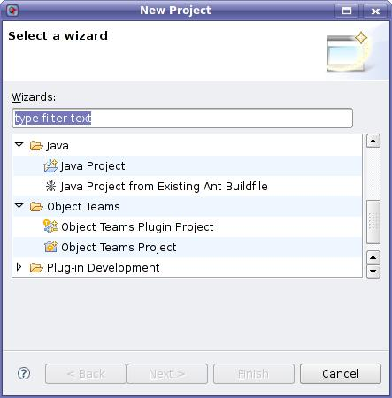
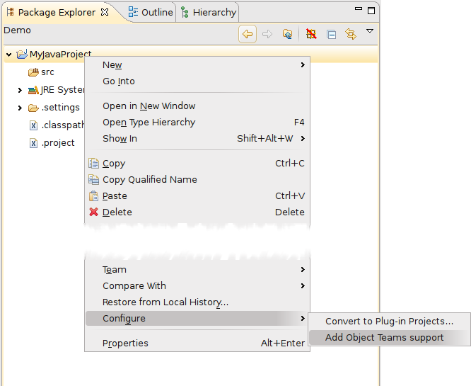

The easiest way to create a new Object Teams project is to use the Object Teams project wizard. The project wizard selection dialog can be opened either by selecting File > New > Project... from the main workbench window or by selecting New > Project... from the package explorer's pop-up menu or by selecting Project... from the drop-down menu on the New button in the workbench toolbar. Afterwards the wizard for creating an Object Teams project has to be chosen.
On the first page of the project wizard the name of the project has to be entered. On the second and last page the standard Java build settings can be defined as desired (source folder, output folder, libraries etc.).
After all information has been entered the project with the chosen name will be created, the files .classpath and .project will be created and the tree view in the package explorer will be updated and the new project displayed.

If the project is to develop an Eclipse plug-in using Object Teams (OT/Equinox) choose the wizard for "Object Teams Plugin Project". This wizard is a variant of the regular "Plug-in Project" wizard.
Alternatively, if you already have a valid Java project or Plug-in project, you may add Object Teams support using the project's context menu Configure > Add Object Teams support.
